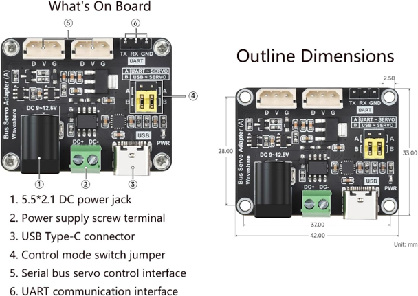
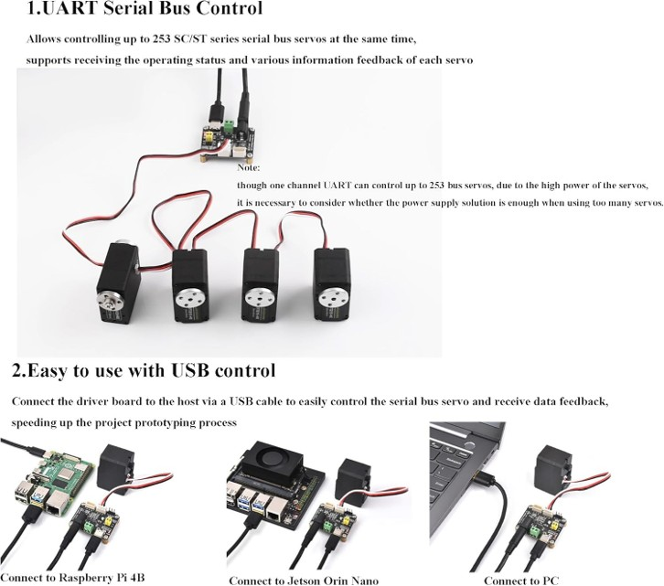
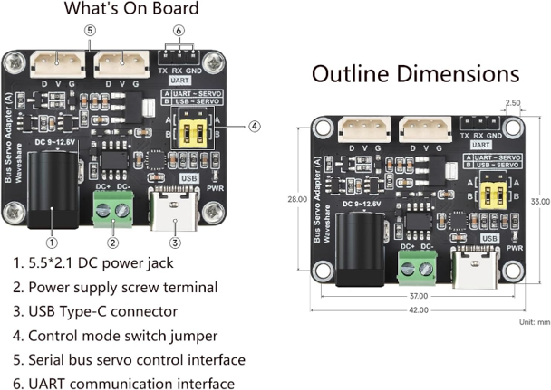
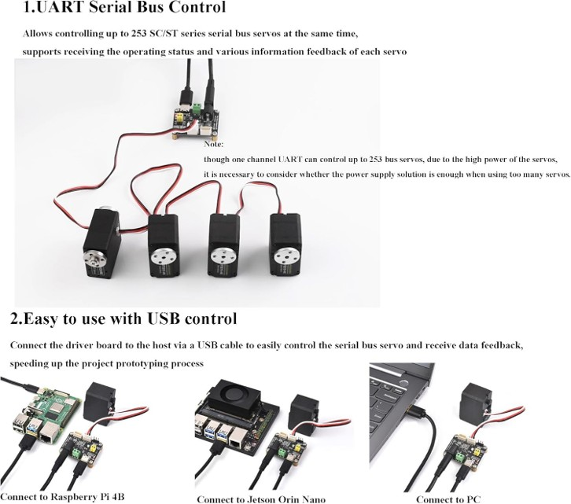

PID (Proportional-Integral-Derivative) control is a feedback control technique widely used in industrial and robotics applications. The PID controller calculates an error value as the difference between a desired setpoint and a measured process variable, then applies correction based on proportional, integral, and derivative terms:
u(t) = Kp * e(t) + Ki * ∫e(t)dt + Kd * de(t)/dt
The Feetech STS 3215 is a bus servo motor commonly used in robotics. To control it with PID, you need:
 



import serial
import time
# Example PID parameters
Kp = 1.2
Ki = 0.01
Kd = 0.05
# Target position
setpoint = 600
integral = 0
last_error = 0
ser = serial.Serial('COM3', 115200, timeout=1)
def move_motor(motor_id, position):
cmd = bytearray([0xFF, 0xFF, motor_id, 0x05, 0x03, 0x1E, position & 0xFF, (position >> 8) & 0xFF])
ser.write(cmd)
time.sleep(0.1)
for i in range(100):
# Read current position from motor (replace with actual read command)
current_position = 500 # Example value
error = setpoint - current_position
integral += error
derivative = error - last_error
output = Kp * error + Ki * integral + Kd * derivative
position = int(current_position + output)
move_motor(1, max(0, min(1023, position)))
last_error = error
time.sleep(0.05)
ser.close()
You can experiment with PID parameters using the following web tool:
PID Tuner Web Page